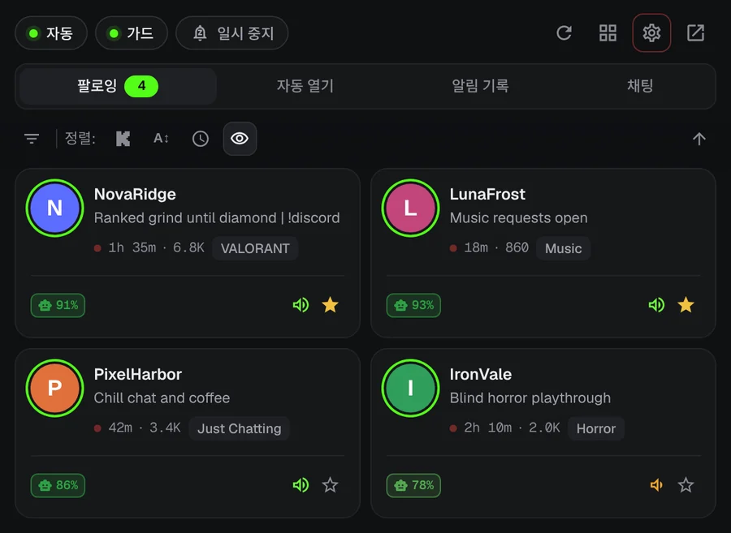
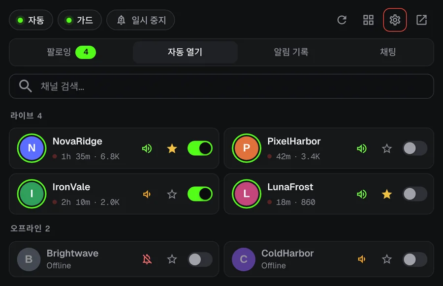
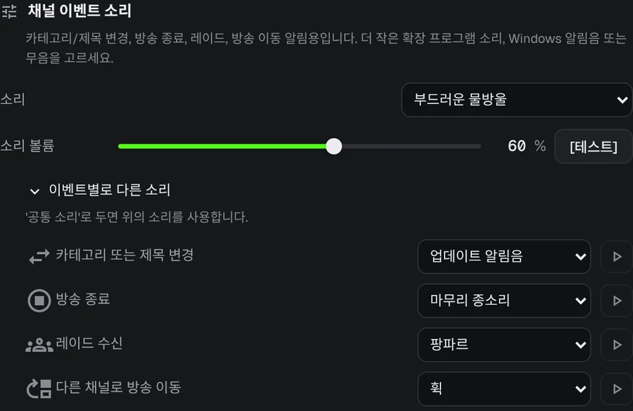
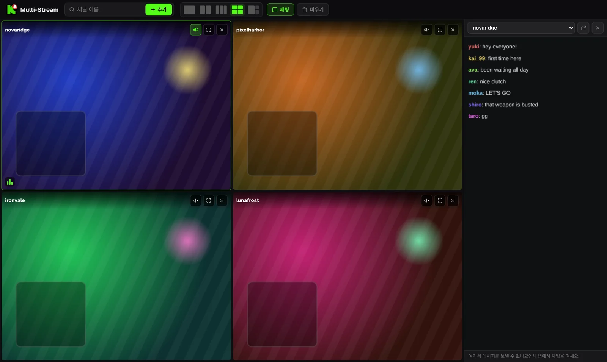

Kick 방송 시작을 다시는 놓치지 마세요.
좋아하는 스트리머가 새벽 3시에 방송을 켜요. KickAlert는 Kick 탭이 닫혀 있어도 그 순간 데스크톱 알림을 보내요. 무료이고, 채널 수 제한도 추적도 없어요.
Edge와 Opera 버전도 곧 나와요
 KickAlert
KickAlert직접 해 보세요. 벨을 눌러 보세요.
지금 오프라인인 채널이에요. 하나를 골라 벨을 켜고 방송이 시작되면 어떻게 되는지 보세요.
즉시 알림
KickAlert는 Kick의 실시간 연결을 지켜보고 있어서, 몇 분 뒤가 아니라 방송이 시작되는 순간 알림이 와요. 채널마다 소리를 고르고, 방해 금지 시간을 정하거나, 아침까지 전부 일시 정지할 수 있어요.

자동 열기
저절로 열릴 채널을 골라 두세요. 방송이 시작되면 바로 새 탭에서 열리고, 같은 탭이 두 번 열리지 않아요. 레이드로 방송이 다른 채널로 옮겨 가면 탭이 스스로 닫히게 할 수도 있어요.

무슨 일이 있었는지 바로
레이드, 방송 종료, 카테고리 변경, 옮겨 간 방송마다 채널별로 따로 알림과 소리를 정할 수 있어요.

채팅 레이더
최대 5개 채널의 채팅에 내 이름이나 지정한 단어가 나오면 Kick을 닫아 둬도 알림을 받아요. 채팅 필터는 스팸을 숨기고, 비슷한 글자로 바꿔 쓴 단어도 잡아내요.
한 탭에서 최대 네 개 방송
방송은 음소거 상태로 시작해요. 원하는 방송의 소리를 클릭 한 번으로 켜세요. 채팅은 옆 패널에 있어요.

방송 화면은 예시입니다.
데이터는 브라우저 안에만 남아요
- 분석 도구 없음, 추적 없음
- kick.com과만 통신
- 모든 권한을 처음 실행할 때 설명
- GitHub에 소스 코드 공개
자주 묻는 질문
KickAlert는 무료인가요?
네. 모든 기능이 무료이고, 팔로우할 수 있는 채널 수에도 제한이 없어요.
Kick을 계속 열어 둬야 하나요?
아니요. KickAlert는 백그라운드에서 동작해서 Kick 탭이 하나도 없어도 알려 드려요. 같은 브라우저에서 Kick에 로그인만 되어 있으면 돼요.
설치했는데 알림이 안 와요.
새로 설치하면 알림이 쏟아지지 않도록 꺼진 상태로 시작해요. 원하는 채널의 벨을 켜거나, 설정에서 모든 채널을 한 번에 켜세요. 각 채널 설정의 "이 채널의 알림을 받게 되나요?" 확인에서 알림을 막을 수 있는 다른 원인도 확인할 수 있어요.
어떤 브라우저에서 쓸 수 있나요?
지금은 Chrome과 Firefox에서 쓸 수 있고, Edge와 Opera도 준비 중이에요. Brave, Vivaldi 같은 Chromium 브라우저는 Chrome 웹 스토어에서 설치할 수 있어요.
KickAlert 설치하기
Edge와 Opera 버전도 곧 나와요